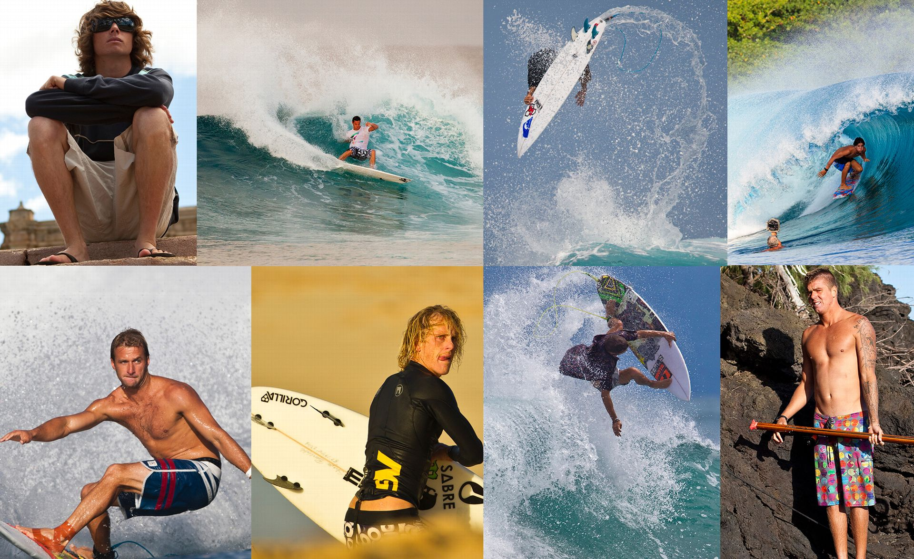
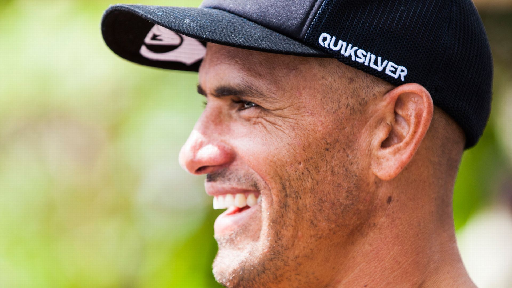
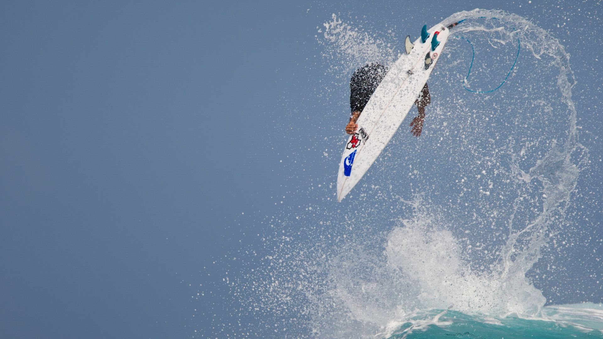
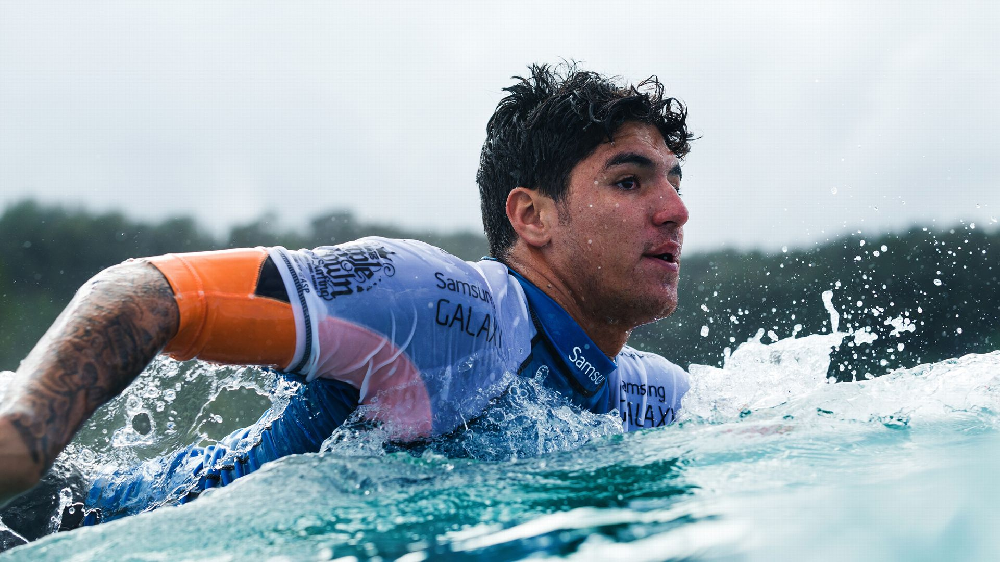
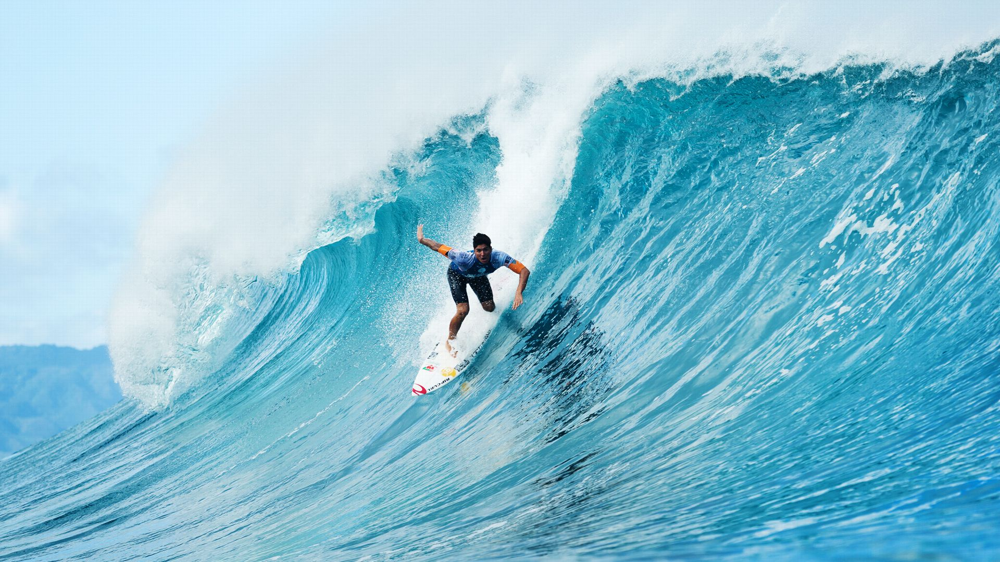

Oito dos surfistas mais talentosos do mundo assinaram contrato para o Real Surf dos X Games. Incluindo o 11 vezes campeão mundial Kelly Slater e o enlouquecedor de surf gratuito Matt Meola, o maior show do surf está prestes a começar. Aqui está quem você estará vendo.
Com 11 títulos mundiais, 51 vitórias em eventos e inúmeros outros recordes, ninguém se aproxima de Kelly Slater. Ele é de longe o melhor surfista competitivo da história do esporte.
Com 11 títulos mundiais, 51 vitórias em eventos e inúmeros outros recordes, ninguém se aproxima de Kelly Slater. Ele é de longe o melhor surfista competitivo da história do esporte.
Era óbvio, desde o início do último dia do Pipe Masters, que uma Medina concentrada e determinada não deixaria o título escapar de seu alcance.
Gabriel Medina
Colocando-se em um brilhante dia final no Pipeline Masters, Medina surfou até a final, onde conquistou 10 pontos, mas acabou perdendo a chance, já que Julian Wilson fez um retorno tardio.
